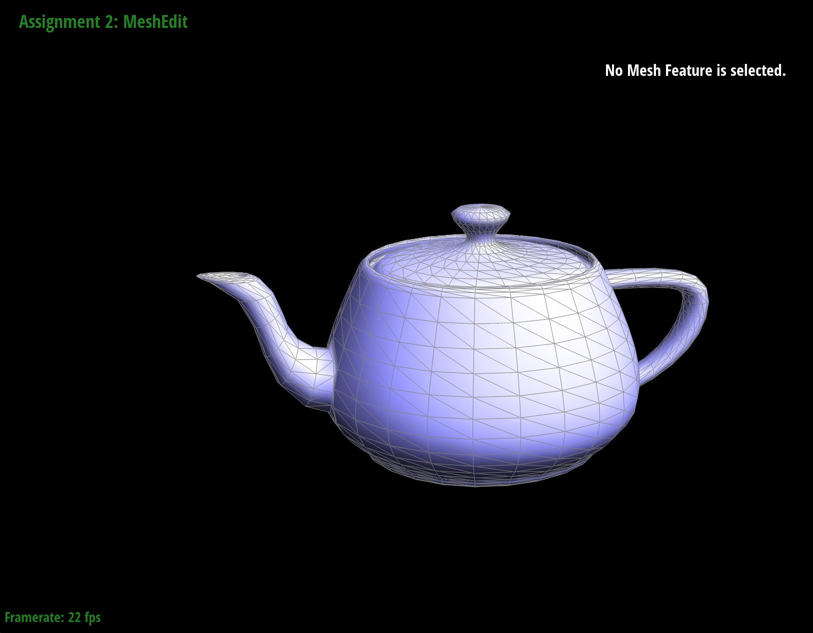
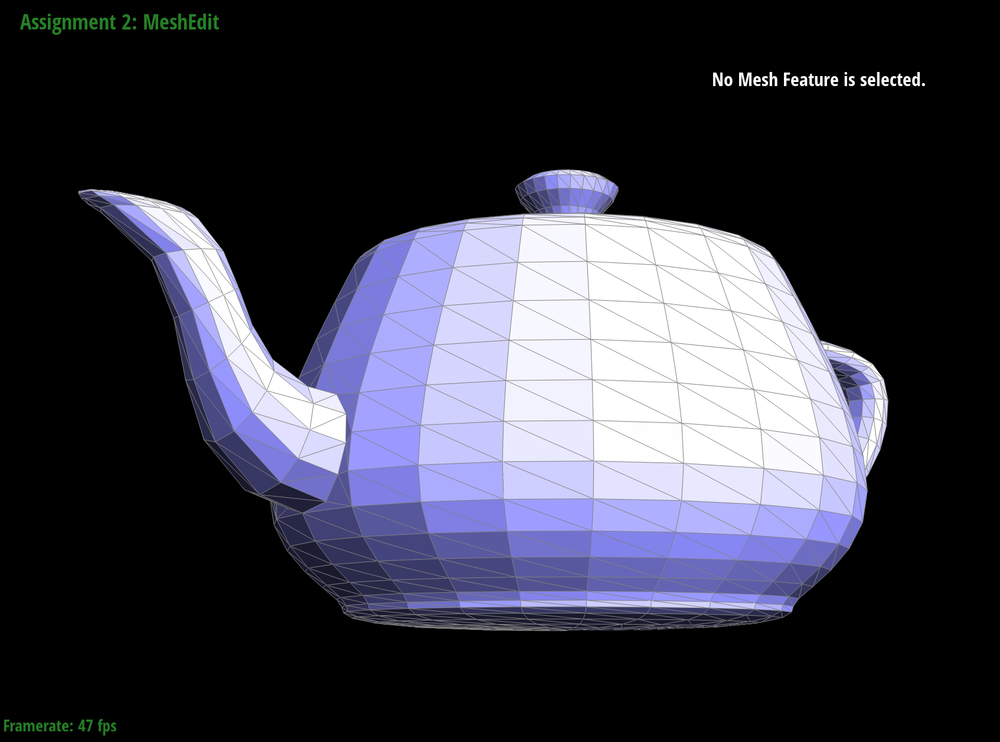

Overview
This project focused on ideas of geometric modeling focusing specifically on Bezier curves and surfaces via the de Casteljau algorithm and triangle meshes through the usage of the half-edge data structure and loop subdivision to work with them. This project allowed us to take a look at how geometry is used in computer graphics to display images. To interact with and see how these concepts are utilized in computer graphics, an interactive GUI exists where we can toggle different settings and see the impacts that different algorithms make. The first section of the project, Tasks 1 and 2, focus on the usage of de Casteljau algorithm to evaluate Bezier curves and surfaces that allow more complex objects to be displayed. The second section, Tasks 3 to 6, focus on Triangle Meshes and working with the half-edge data structure to traverse these meshes and upscale them. In this project we learned a lot more about how to work with meshes and de Casteljau algorithm to create surfaces.
Section I: Bezier Curves and Surfaces
Bezier curves and surfaces are important in computer graphics as they allow us to model smooth and infinitely scalable curves and surfaces. These curves are defined by a set of n + 1 points for a degree n curve and a parameter t. Surfaces are defined by (n + 1) * (m + 1) control points and two parameters u and v. de Casteljau algorithm is a way for us to evaluate these curves and surfaces based on any set of control points and parameters.
Part 1: Bezier curves with 1D de Casteljau subdivision
The algorithm works by essentially inserting new points between two points through linear interpolation, connecting the newly create points, and repeating the process recursively until we end up with a curve. Each recursive call is one level of subdivision allowing us to get closer and closer to a complete curve shape. This process can be done for any set of n control points defined as p1, ..., pn and a set float of t that we evaluate the curve on. At each recursive step we use a lerp to create n - 1 intermediate control points based on t and continue this process until we end up with a singular control point left which lies on the Bezier curve at parameter t. These intermmediate points defined as p`1, .., p`n are caluclated by doing p`i = lerp(pi , pi+1 , t) = (1 - t)pi + tpi + 1.
Our implementation evaluates a single step of the de Casteljau algorithm. The algorithm works by first checking if the
vector of points inputed in is already of size 1 or 0 and if so simply return back the original points since we already
gave a singular point. If that is not the case we create a vector called intermediate of type
i = 1 to points.size() - 1 since the
calculation uses i along with i + 1. Within each step of the for loop we do a lerp via
lerp(t, points[i], points[i + 1]) and create the intermediate point which we then push to the
intermediate store.


|
|

|
|
|
|


|
|
|
Part 2: Bezier surfaces with separable 1D de Casteljau subdivision
The main algorithm that is used to evaluate Bezier surfaces is very similar to that which is used for Bezier edges. Now, instead of having a single vector of points that we want to evaluate on, we have a vector of vectors and 2 points that we evaluate. Each of these inner vectors are Bezier curves that we will need to evaluate point u on in order to create control points for the "moving" Bezier curve. We then do a basic 1D de Casteljau algorithm, the one used for an edge, to evaluate point v on the "moving" curve that was just created.
Our implementation splits up this process into 4 functions that allow us to run the entire process. These functions are
BezierPatch::evaluate(...), BezierPatch::evaluate1D(...), and BezierPatch::evaluateStep(...).
evaluate is how the algorithm gets ran. It takes in an input of u and v and
begins the algorithm by calling evaluate1D on each of the vectors of control points stored in controlPoints
along with u to evaluate point u on each of the Bezeir curves. evaluate1D achieves this by running
evaluateStep until only a singular point is left which is then returned. evaluateStep does the same
things as in Part 1 but instead working with Vector3D points. After these points are calculated for each row,
evaluate then does one more call to evaluate1D with the parameter v to calculate the final point
on the "moving" curve that was caluclated by the row points.
Section II: Triangle Meshes and Half-Edge Data Structure
Utilizing half-edge meshes we are able to create triangle meshes and create 3D objects.This method is different from that of Section I. While Bezeir curves are better than triangle meshes for representing smooth surfaces and also require less memory since we simply need to evaluate the points to create our surfaces, they are more difficult to render directly. As such triangle meshes are sometimes preferred even with the tradeoffs.
Part 3: Average normals for half-edge meshes
Average normals allow us to create different levels of shading within a half-edge mesh by shading in individual vertices.
We achieve this within our code by getting an approximate unit normal at each vertex by computing the area-weighted average
of the normals of neighboring faces, then normalizing. To do this we create a Vector3D area_weighted_vertex_normal
that is set to a 0, 0, 0 Vector that we can use to keep track of the weighted vertex normal. We then go about traversing
each of the neighboring vertices by using a do-while loop on the a half-edge h which is set to the original half-edge.
As long as the face of our current half-edge is not a boundary, we retrieve the 3 vertices that define the current face.
Using these 3 vertices we compute the 2 vectors that lay along the face by doing Vector3D vector1 = vertex1 - vertex0
and Vector3D vector2 = vertex2 - vertex0. Using these two vectors we calculate the normal vector by taking
the cross product of the vectors we just created. We then take the norm of the normal vector and divide by two to get the
area of the triangle face double tri_face_area. Using this value and the face's normal value we increment
area_weighted_vertex_normal += (tri_face_area * face_normal). After this happens we advance h
h = h->twin()->next() to continue our traversal until we return to the original half-edge. Once we return
to the original half-edge we can simply return area_weighted_vertex_normal.unit() giving us the unit normal.
|
|

|

|

|
|

|

|
Part 4: Half-edge flip
In order to correctly implement the edge flip operation we first had to better understand how the half-edge data structure creates representations of a mesh. An image that helped us to better understand how this happens and what should occur when an edge is flipped was the image that was posted on Piazza. We thus based our variable naming scheme off of the image. Within the algorithm we essentially go through and reassign the pointer for every single half-edge, edge, vertex, and face data structure that is involved within edge flip. The main data structures that had the most modifications were the half-edges of the edge that we wanted to flip. This is due to the fact that for these edges we needed to reassign what their vertices were. Additionally, we wanted to make sure that all of the vertices correctly pointed to a valid half-edge so we made sure to reassign all of vertices' half-edges.
{kind=link}

Originally, we didn't reassign the pointers for the half-edges on the outside of our two faces or the edges themselves, however after running into issues in Task 6 we went back and reassigned everything to ensure that all of the data structures were correctly set.
Part 5: Half-edge split
Similar to edge flips, in order to correctly implement the edge split we first had to better understand how the split would
impact the existing elements and create new ones. We based our naming conventions based on a different
image that was posted on Piazza.
Similarly for splits we go through and reassign the pointer for every single half-edge, edge, vertex, and face
data structure. However, for splits we also need to create 1 new vertex, 3 new edges, 3 new faces, and 6 new half-edges.
After creating all of these elements we made sure to assign correctly give these objects their corresponding attributes.
By doing so we correctly created the objects and made sure that they displayed correctly. For the new vertex, we made sure
to calculate its new position correctly by taking the average of the v0 and v1 positions.
For the brand new faces we simply assigned one of the half-edges of the face to be the corresponding half-edge attribute.
We did a similar thing for the edges to make sure they rendered correctly. Finally, we made sure to reassign all of the
half-edges by using the setNeighbors method and their correspoding neighbors based on the diagram.
{kind=link}

One debugging issue that we ran into while doing this part was having the mesh not correctly rendering. We saw that after doing a flip the program would not load the image. This was due to having some of the vertices not correctly updating their half-edges leading to an impossible mesh layout. Another similar issue that occured was assigning a half-edge to the wrong face which also lead to issues with the mesh not coming out as intended. Just like with the flip we didn't originally reassign the pointers for the half-edges on the outside of our two faces or the edges themselves, however after running into issues with Task 6 we went back and added the rest of the objects.
Part 6: Loop subdivision for mesh upsampling
To implement loop subdivision we based it on the steps that were in the skeleton of the code. This is achieved by using
four different loops that go over all of the edges within the mesh. The first for loop is used to calculate the new positions
for all of the prexisting vertices within the mesh and to calculate the position of the new vertices that should be created by
the splits. To calculate the new position for the old vertices we use the formula
(1 - n * u) * original_position + u * original_neighbor_position_sum from the lecture. In order to calculate the
original_neighbor_position_sum we do an inner loop that goes over the neighbors of the current edge and retrieves
the position of the neighboring vertices. To get u we check how many neighbors the vertex has and set u by doing
newPosition attribute of the
vertex. After this occurs we grab four vertices A, B, C, D based on the diagram from the spec. Using these four vertices
we calculate 3/8 * (A + B) + 1/8 * (C + D) and store this new position into the edge. This value represents the
position that the vertex of an edge split of the current edge should take. During this time we make sure to mark the vertices
and edges we work with as not being isNew to ensure that our splits and flips work correctly.
The next loop is used to split all of the edges in the mesh. To do this we use a while loop that starts at the first edge and goes
to the last edge. Within each iteration, before we do any splitting we make sure to check that both vertices of the edge are new.
If either of them is not new that means that the edge we are currently looking at is one that was created when a edge was split.
Additionally, to make sure that all of the vertices and edges have the correct isNew value, we updated our
split code to set the isNew attributes accordingly for the vertex and four edges that are invovled with a split.
Since an edge being split is done by essentially inserting a new edge at the vertex point, we treat the created edge that was originally
part of the main edge as not being a new edge. Additionally, during this time we make sure to set the newPosition
for the vertex that was just created to be the newPosition that is being stored by the edge.
After splitting all the edges we want to now flip new edges that inolve one new vertex and one old vertex. To achieve this, we do another while loop, done in the same way as the second loop. Within this loop we have an if check that only flips when the above condition is met.
Our final loop is simply done to go through and correctly update the vertex positions. This is done with another for loop
where we simply set vertex->position = vertex->newPosition for the half-edge that the edge represents.
There were a couple of debugging issues that we ran into when doing this task. As mentioned above, during Task 6 we went back and added additional assignments to our Task 4 and 5 implementations since they were not as robust as needed. Another debugging issue that we had was that the calculations for the new vertex positions were coming out incorrectly due to us forgetting to cast to floats leading our numbers to become rounded. An additional issue we had was forgetting to reassign the newly created vertex's position to be the new vertex position that was being stored within the edge. Since we failed to do this our vertices were not showing up in the right places and were causing issues with our final mesh.
Looking at the results of running the subdivision loops what we noticed was that each level of subdivion seemed to make the mesh more and more smooth. The biggest change on the torus seems to hapen between the 0th and 1st subdivision loops. As a result of the smoothening out of the mesh sharp corners and edges fade as we run more loops. However, by splitting on an edge we can slow down the amount by which the sharp edges dissapear.
|
|

leaving a more sharp edge |
Pre-splitting some of the edges changes the effects of our subdivisions. By splitting all of the middle edges of our cube we can siginficantly decrease the asymmetry of the object after repeated subdivisions. By doing the split we make each face of the cube into a symmetric object. As such when we do the subdivision we are doing the same work equally on all sides of each face on all faces keeping the symmetry of the object.
|
|
|
|
|
|
|
|
|
|
|
|
Project Webpage Link
Project 2 Webpage
https://cal-cs184-student.github.io/sp22-project-webpages-Seans1337/proj2/index.html